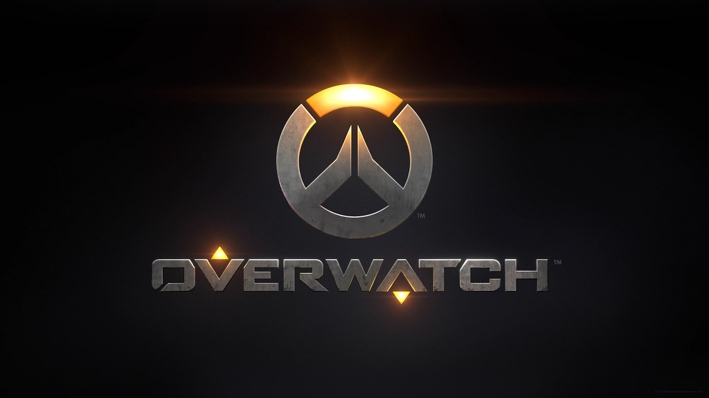
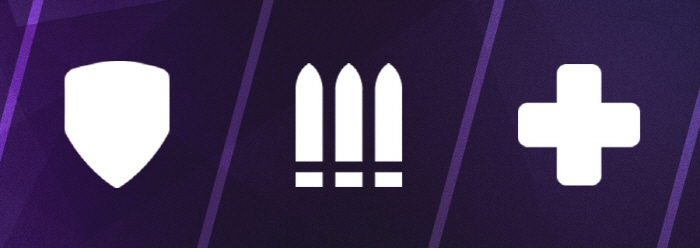

내가 좋아하는 것들
오버워치

제작 : 블리자드 엔터테인먼트
출시 : 2016. 05 .24
등급 : 12세 이용가, 15세 이용가
가격 : 22,500원
최신 업데이트

2/2/2의 역할 고정 배타 플레이어들에게 자신이 하고 싶어하는 역할을 고를 권한을 주며 돌격 영웅 2명, 지원 2명, 공격 2명으로 팀을 구성하게 된다. 역할 고정 배타는 경기의 수준을 높이며 팀원 간의 분위기를 긍정적으로 바꿔주는 역할이 될 것으로 전망된다.